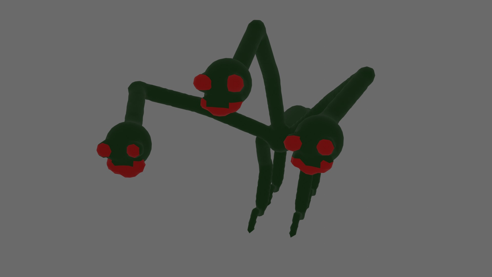

Characters
I made an animation series in blender called, Crimson Abyss. For the sake of being orginized, there will be two sections, one for the humans and the other for the Void Creatures.
Humans

First character we have is The Guy. The Guy is the protagonist of Crimson Abyss. His power is super speed, he uses his powers to dodge attacks that no normal person can dodge, and it gives him an advantage to rush down and easily win.

Next we have The Guy's brother, Candy. Candy has the power of shapeshifting, anything he has seen, he can transform into it. This includes rocks, plants, objects, animals and even other people. It also allows him to use the abilities of whoever he transforms into.

Michael is one of the characters in the group of heros. Michael's powers represent light, he can shoot lasers that are blue in color, and he can fly. Michael was the first person The Guy met when he was in the void. Michael also had a twin brother who we will talk about next.

Crim and Michael are twins. While Michael's powers represent light, Crim's represent darkness. Crim is the Antagonist of Crimson Abyss. Crim was the one who created the void creatures and his powers are the same as Michael's, except his color is red.

And for the finial human we'll talk about is Cannon. Cannon is a character introduced in season 2. He has the power of telekinesis and psychic abilities. He uses his powers to hover and throw objects or his opponents.
Void Creatures
Before we talk about the different void creatures, I'll explain what exactly a void creature is. Void creatures are mutated animals that Crim made with his powers. He turns them into a bigger and more deadly version of themselves. They are usualy black in color, and have a glowing smiling face.

First of the void creatures is Fred. Fred was the first void creature to be created by Crim. A Fred is made from an ant. Fred's have two sharp limbs on their back which they use for fighting. There is one Fred that doesn't attack humans, it was made by Michael and is named, Blue Fred.

Next is Leghead. Leghead is a void creature with four long legs coming out of the top of it's head. Leghead uses it's long legs for mostly everything since it's arms are short. Leghead was made from a spider, considering it has eight limbs.

The Ripper is made from a cat. They hide in the dark and use their long sharp claws to attack prey. Rippers also stay in packs of 5. They used to be aggressive, but they now commanded by something else other than Crim.

Spike is a void creature that commands all of the Rippers. Spike used to be a human, but he was turned into a void creature by Crim. Spike's power was super speed, which is also the power of The Guy's. This is because Spike was The Guy's dad. Unlike the other void creatures, Spike doesn't listen to any of Crim's commands, so he was able to stop Rippers from harming humans.
The Hydra is the biggest void creature. The Hydra was made from three different lizards. A chameleon, a horned lizard, and the komodo dragon. Because of this, the Hydra can change colors. Hydras are regularly a dark green color instead of black, they also don't attack unless you provoke them.


Something similar in looks to the Ripper is the Stalker. The Stalker is the only harmless void creature. And just like Spike, they are related to The Guy. The Stalker is Candy who was turned into a void creature. When Candy was turned into the Stalker, he gained a new ability, evolution. He was able to grow different part and gain different abilities of whoever he stayed around for a period of time. In his final form, the Stalker looked like a mini version of Blue Fred.

Last but deffinetly not least, we have Mega Fred. Mega Fred was the first Fred to be created. It started out as a regular Fred, but unlike the others, he acually became friends with Crim. Crim gave them more power, and the results were the Fred growing bigger and getting two more limbs on it's back. Mega Fred is the antagonist in season 2.